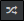

Perform a cross / multiple cross analysis
-
Cross sorting makes it possible to simultaneously analyze the answers to two questions. The crossing is also studying the presence or not of dependence between the two variables and their degree of correlation.
EXAMPLE: In a survey on tourism, one may want to look at the link between place of stay and total expenditure.
-
A multiple cross analysis allows for simultaneous analysis of responses to more than two questions. This makes it possible to study the link between several parameters and to synthesize the results to refine the analysis of the answers.
EXAMPLE: In a tourism survey, one may want to look at the relationship between gender, age, and total spending.
There are three ways to perform a cross analysis.
-
The first solution is to strip the responses. First we put a first variable (drag and drop from the list on the left) on the central work area. Then, drag & drop another one over, a cross tab will appear. By dragging the variable on this tab, the variables will automatically cross. We usually get a cross table whose properties can be modified using the dialog box.

Click on the image for an animated preview
-
The second solution is to select at least two variables present on the same work page and to click on

. -
The third solution is to choose cross analysis passing the cursor over the button to add a new element (Button
 ). A new window opens next, where you have to choose the variables to analyze.
). A new window opens next, where you have to choose the variables to analyze.


Perform a multivariate analysis
There are two ways to perform a multivariate analysis.
-
The first solution is to drag and drop a new variable on a cross analysis or an already existing multivariate analysis. Three tabs will appear, append row, append column or add a measure, it is necessary to drag the variable on the tab according to where you wish to place it.

We usually get a cross tab with a graph whose properties can be modified using the dialog box.
-
The second solution is to select a cross or multivariate analysis with a variable present on the same working page.
Icons appear on the selected tables to indicate the desired operation.

-
 allows to add to the cross or multivariate analysis the variable in row.
allows to add to the cross or multivariate analysis the variable in row. -
 allows to add to the cross or multivariate analysis the variable in column.
allows to add to the cross or multivariate analysis the variable in column. -
allows to add to the cross analysis the variable in measure cell.